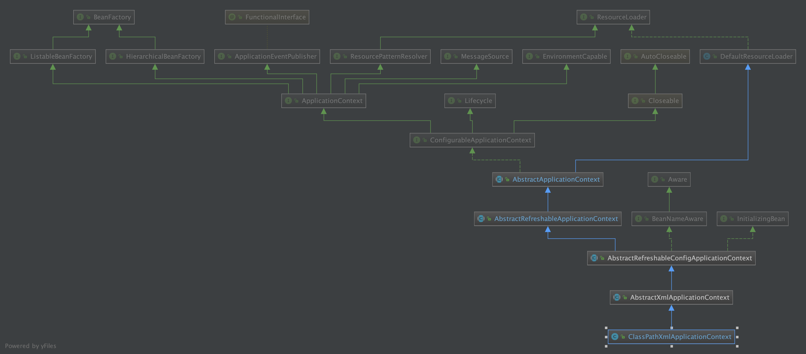

ClassPathXmlApplicationContext & getBean
ClassPathXmlApplicationContext构造函数执行
附ClassPathXmlApplicationContext类的UML

- 测试例子使用的构造函数
public ClassPathXmlApplicationContext(
String[] configLocations, boolean refresh, @Nullable ApplicationContext parent)
throws BeansException {
super(parent);
// 设置`this.configLocations`
setConfigLocations(configLocations);
if (refresh) {
// 这里refresh为true（重点方法）
// 这里使用了父类`AbstractApplicationContext`的`refresh`方法
refresh();
}
}
设置Environment环境变量和configLocations

AbstractApplicationContext的refresh方法
- refresh方法概述了Ioc容器的处理流程
@Override
public void refresh() throws BeansException, IllegalStateException {
synchronized (this.startupShutdownMonitor) {
// Prepare this context for refreshing.
prepareRefresh();
// 从配置文件就会解析成一个个 Bean 定义，注册到 BeanFactory 中，
// 当然，这里说的 Bean 还没有初始化，只是配置信息都提取出来了，
// 注册也只是将这些信息都保存到了注册中心(说到底核心是一个 beanName-> beanDefinition 的 map)
// Tell the subclass to refresh the internal bean factory.
ConfigurableListableBeanFactory beanFactory = obtainFreshBeanFactory();
// Prepare the bean factory for use in this context.
prepareBeanFactory(beanFactory);
// 先看try里面做了哪些事情(读别的源码也一样，先主后次)
try {
// Allows post-processing of the bean factory in context subclasses.
postProcessBeanFactory(beanFactory);
// 执行程序员提供的BeanFactoryPostProcessor
// 扫描类（当然@Configuration全注解类是直接先注册的，再根据这个@Configuration类完成扫描）
// 此方法执行完成后，beanDefinitionMap就有了
// Invoke factory processors registered as beans in the context.
invokeBeanFactoryPostProcessors(beanFactory);
// Register bean processors that intercept bean creation.
registerBeanPostProcessors(beanFactory);
// Initialize message source for this context.
initMessageSource();
// Initialize event multicaster for this context.
initApplicationEventMulticaster();
// Initialize other special beans in specific context subclasses.
onRefresh();
// Check for listener beans and register them.
registerListeners();
// Instantiate all remaining (non-lazy-init) singletons.
// 单例bean的实例化（走单例bean的生命周期）
finishBeanFactoryInitialization(beanFactory);
// Last step: publish corresponding event.
finishRefresh();
}
catch (BeansException ex) {
if (logger.isWarnEnabled()) {
logger.warn("Exception encountered during context initialization - " +
"cancelling refresh attempt: " + ex);
}
// Destroy already created singletons to avoid dangling resources.
destroyBeans();
// Reset 'active' flag.
cancelRefresh(ex);
// Propagate exception to caller.
throw ex;
}
finally {
// Reset common introspection caches in Spring's core, since we
// might not ever need metadata for singleton beans anymore...
resetCommonCaches();
}
}
}
prepareRefresh()先跳过
BeanFactory构造
构造生成ConfigurableListableBeanFactory类型的BeanFactory
refresh方法中构造beanFactory具体是DefaultListableBeanFactory(即注解方式所谓的BeanFactory就是DefaultListableBeanFactory)，调用了抽象类AbstractRefreshableApplicationContext的refreshBeanFactory方法
@Override
protected final void refreshBeanFactory() throws BeansException {
// 如果BeanFactory不为空，则清除BeanFactory里面的实例，并销毁BeanFactory
if (hasBeanFactory()) {
destroyBeans();
closeBeanFactory();
}
try {
// BeanFactory的实例工厂：DefaultListableBeanFactory
DefaultListableBeanFactory beanFactory = createBeanFactory();
beanFactory.setSerializationId(getId());
// 设置是否可以同名覆盖，循环依赖
customizeBeanFactory(beanFactory);
// 解析比如xml文件，并把xml文件中的标签封装成BeanDefinition对象，加载到工厂中, 通常是通过代理读取器实现
// 比如 通过 XmlBeanDefinitionReader 读取 ClassPathXmlApplicationContext中传入的 configResources xml【模板设计】
loadBeanDefinitions(beanFactory);
synchronized (this.beanFactoryMonitor) {
this.beanFactory = beanFactory;
}
}
catch (IOException ex) {
throw new ApplicationContextException("I/O error parsing bean definition source for " + getDisplayName(), ex);
}
}
抽象类AbstractXmlApplicationContext的loadBeanDefinitions方法
BeanFactory实例工厂完成解析xml文件中的Bean并封装成BeanDefinition加载到工厂中

DefaultListableBeanFactory存储了BeanDefinition
/** Map of bean definition objects, keyed by bean name. */
private final Map<String, BeanDefinition> beanDefinitionMap = new ConcurrentHashMap<>(256);

- 附
DefaultListableBeanFactoryUML（DefaultListableBeanFactory就是一个独立的Ioc容器）

- 有了beanFactory,要使用之，还要做各种工作，回到refresh方法

prepareBeanFactory(beanFactory)
/**
* Configure the factory's standard context characteristics,
* such as the context's ClassLoader and post-processors.
* @param beanFactory the BeanFactory to configure
*/
protected void prepareBeanFactory(ConfigurableListableBeanFactory beanFactory) {
// 设置类加载器（要实例化bean,就需要类加载器）
// Tell the internal bean factory to use the context's class loader etc.
beanFactory.setBeanClassLoader(getClassLoader());
// 设置EL表达式解析器（Bean初始化完成后填充属性时会用到）
beanFactory.setBeanExpressionResolver(new StandardBeanExpressionResolver(beanFactory.getBeanClassLoader()));
// 设置属性注册解析器PropertyEditor
beanFactory.addPropertyEditorRegistrar(new ResourceEditorRegistrar(this, getEnvironment()));
// Configure the bean factory with context callbacks.
beanFactory.addBeanPostProcessor(new ApplicationContextAwareProcessor(this));
beanFactory.ignoreDependencyInterface(EnvironmentAware.class);
beanFactory.ignoreDependencyInterface(EmbeddedValueResolverAware.class);
beanFactory.ignoreDependencyInterface(ResourceLoaderAware.class);
beanFactory.ignoreDependencyInterface(ApplicationEventPublisherAware.class);
beanFactory.ignoreDependencyInterface(MessageSourceAware.class);
beanFactory.ignoreDependencyInterface(ApplicationContextAware.class);
// BeanFactory interface not registered as resolvable type in a plain factory.
// MessageSource registered (and found for autowiring) as a bean.
beanFactory.registerResolvableDependency(BeanFactory.class, beanFactory);
beanFactory.registerResolvableDependency(ResourceLoader.class, this);
beanFactory.registerResolvableDependency(ApplicationEventPublisher.class, this);
beanFactory.registerResolvableDependency(ApplicationContext.class, this);
// Register early post-processor for detecting inner beans as ApplicationListeners.
beanFactory.addBeanPostProcessor(new ApplicationListenerDetector(this));
// Detect a LoadTimeWeaver and prepare for weaving, if found.
if (beanFactory.containsBean(LOAD_TIME_WEAVER_BEAN_NAME)) {
beanFactory.addBeanPostProcessor(new LoadTimeWeaverAwareProcessor(beanFactory));
// Set a temporary ClassLoader for type matching.
beanFactory.setTempClassLoader(new ContextTypeMatchClassLoader(beanFactory.getBeanClassLoader()));
}
// 注册各种系统环境的bean组件（environment，systemProperties，systemEnvironment）
// Register default environment beans.
if (!beanFactory.containsLocalBean(ENVIRONMENT_BEAN_NAME)) {
beanFactory.registerSingleton(ENVIRONMENT_BEAN_NAME, getEnvironment());
}
if (!beanFactory.containsLocalBean(SYSTEM_PROPERTIES_BEAN_NAME)) {
beanFactory.registerSingleton(SYSTEM_PROPERTIES_BEAN_NAME, getEnvironment().getSystemProperties());
}
if (!beanFactory.containsLocalBean(SYSTEM_ENVIRONMENT_BEAN_NAME)) {
beanFactory.registerSingleton(SYSTEM_ENVIRONMENT_BEAN_NAME, getEnvironment().getSystemEnvironment());
}
}
postProcessBeanFactory(beanFactory的postProcessor)
在所有的BeanDefinition加载完成之后，bean实例化之前执行
/**
* Modify the application context's internal bean factory after its standard
* initialization. All bean definitions will have been loaded, but no beans
* will have been instantiated yet. This allows for registering special
* BeanPostProcessors etc in certain ApplicationContext implementations.
* @param beanFactory the bean factory used by the application context
*/
protected void postProcessBeanFactory(ConfigurableListableBeanFactory beanFactory) {
}
// TODO 测试
invokeBeanFactoryPostProcessors(beanFactory)
/**
* Instantiate and invoke all registered BeanFactoryPostProcessor beans,
* respecting explicit order if given.
* <p>Must be called before singleton instantiation.
*/
protected void invokeBeanFactoryPostProcessors(ConfigurableListableBeanFactory beanFactory) {
// 1.getBeanFactoryPostProcessors(): 拿到当前应用上下文beanFactoryPostProcessors变量中的值
// 2.invokeBeanFactoryPostProcessors: 实例化并调用所有已注册的BeanFactoryPostProcessor
PostProcessorRegistrationDelegate.invokeBeanFactoryPostProcessors(beanFactory, getBeanFactoryPostProcessors());
// Detect a LoadTimeWeaver and prepare for weaving, if found in the meantime
// (e.g. through an @Bean method registered by ConfigurationClassPostProcessor)
if (beanFactory.getTempClassLoader() == null && beanFactory.containsBean(LOAD_TIME_WEAVER_BEAN_NAME)) {
beanFactory.addBeanPostProcessor(new LoadTimeWeaverAwareProcessor(beanFactory));
beanFactory.setTempClassLoader(new ContextTypeMatchClassLoader(beanFactory.getBeanClassLoader()));
}
}
registerBeanPostProcessors((bean的postProcessor))
/**
* Instantiate and invoke all registered BeanPostProcessor beans,
* respecting explicit order if given.
* <p>Must be called before any instantiation of application beans.
*/
protected void registerBeanPostProcessors(ConfigurableListableBeanFactory beanFactory) {
PostProcessorRegistrationDelegate.registerBeanPostProcessors(beanFactory, this);
}
注册前的BeanPostProcessor:
- ApplicationContextAwareProcessor
- ApplicationListenerDetector
且之前已经将所有BeanDefinition加入到BeanDefinitionMap中了(之前已经应用了BeanDefinitionRegistryPostProcessor和BeanFactoryPostProcessor了)
BeanPostProcessor是可以有优先级顺序的，注册的时候也是按照顺序；没有顺序，就是常规的BeanPostProcessor
// Now, register all regular BeanPostProcessors.
List<BeanPostProcessor> nonOrderedPostProcessors = new ArrayList<>();
for (String ppName : nonOrderedPostProcessorNames) {
BeanPostProcessor pp = beanFactory.getBean(ppName, BeanPostProcessor.class);
nonOrderedPostProcessors.add(pp);
if (pp instanceof MergedBeanDefinitionPostProcessor) {
internalPostProcessors.add(pp);
}
}
registerBeanPostProcessors(beanFactory, nonOrderedPostProcessors);
可以看到是直接beanFactory.getBean将这些BeanPostProcessor给实例化出来，注册后
FullLifeInstantiationAwareBeanPostProcessor implements InstantiationAwareBeanPostProcessor
FullLifeBeanPostProcessor implements BeanPostProcessor
FullLifeMergedBeanDefinitionPostProcessor implements MergedBeanDefinitionPostProcessor
initMessageSource & initApplicationEventMulticaster(消息和广播初始化)
// Initialize message source for this context.
initMessageSource();
// Initialize event multicaster for this context.
initApplicationEventMulticaster();
消息处理 & 事件监听
- Initialize other special beans in specific context subclasses.
onRefresh()
/**
* Template method which can be overridden to add context-specific refresh work.
* Called on initialization of special beans, before instantiation of singletons.
* <p>This implementation is empty.
* @throws BeansException in case of errors
* @see #refresh()
*/
protected void onRefresh() throws BeansException {
// For subclasses: do nothing by default.
}
registerListeners()（注册监听器）
/**
* Add beans that implement ApplicationListener as listeners.
* Doesn't affect other listeners, which can be added without being beans.
*/
protected void registerListeners() {
// 注册特殊的监听器
// Register statically specified listeners first.
for (ApplicationListener<?> listener : getApplicationListeners()) {
getApplicationEventMulticaster().addApplicationListener(listener);
}
// 取到所有监听器的名称，设置到上文初始化的广播器
// Do not initialize FactoryBeans here: We need to leave all regular beans
// uninitialized to let post-processors apply to them!
String[] listenerBeanNames = getBeanNamesForType(ApplicationListener.class, true, false);
for (String listenerBeanName : listenerBeanNames) {
getApplicationEventMulticaster().addApplicationListenerBean(listenerBeanName);
}
// 如果存在早期应用事件，发布
// Publish early application events now that we finally have a multicaster...
Set<ApplicationEvent> earlyEventsToProcess = this.earlyApplicationEvents;
this.earlyApplicationEvents = null;
if (earlyEventsToProcess != null) {
for (ApplicationEvent earlyEvent : earlyEventsToProcess) {
getApplicationEventMulticaster().multicastEvent(earlyEvent);
}
}
}
finishBeanFactoryInitialization(beanFactory)（实例化操作）
创建所有非懒加载的单例类（并invoke BeanPostProcessors）
Bean循环依赖，AOP，生命周期回调等
抽象类AbstractAutowireCapableBeanFactory的doCreateBean方法
/**
* Actually create the specified bean. Pre-creation processing has already happened
* at this point, e.g. checking {@code postProcessBeforeInstantiation} callbacks.
* <p>Differentiates between default bean instantiation, use of a
* factory method, and autowiring a constructor.
* @param beanName the name of the bean
* @param mbd the merged bean definition for the bean
* @param args explicit arguments to use for constructor or factory method invocation
* @return a new instance of the bean
* @throws BeanCreationException if the bean could not be created
* @see #instantiateBean
* @see #instantiateUsingFactoryMethod
* @see #autowireConstructor
*/
protected Object doCreateBean(final String beanName, final RootBeanDefinition mbd, final @Nullable Object[] args)
throws BeanCreationException {

抽象类AbstractAutowireCapableBeanFactory的createBeanInstance方法
/**
* Create a new instance for the specified bean, using an appropriate instantiation strategy:
* factory method, constructor autowiring, or simple instantiation.
* @param beanName the name of the bean
* @param mbd the bean definition for the bean
* @param args explicit arguments to use for constructor or factory method invocation
* @return a BeanWrapper for the new instance
* @see #obtainFromSupplier
* @see #instantiateUsingFactoryMethod
* @see #autowireConstructor
* @see #instantiateBean
*/
protected BeanWrapper createBeanInstance(String beanName, RootBeanDefinition mbd, @Nullable Object[] args) {
本例使用了无参的构造器return instantiateBean(beanName, mbd);

/**
* Instantiate the given bean using its default constructor.
* @param beanName the name of the bean
* @param mbd the bean definition for the bean
* @return a BeanWrapper for the new instance
*/
protected BeanWrapper instantiateBean(final String beanName, final RootBeanDefinition mbd) {
try {
Object beanInstance;
final BeanFactory parent = this;
if (System.getSecurityManager() != null) {
beanInstance = AccessController.doPrivileged((PrivilegedAction<Object>) () ->
getInstantiationStrategy().instantiate(mbd, beanName, parent),
getAccessControlContext());
}
else {
beanInstance = getInstantiationStrategy().instantiate(mbd, beanName, parent);
}
BeanWrapper bw = new BeanWrapperImpl(beanInstance);
initBeanWrapper(bw);
return bw;
}
catch (Throwable ex) {
throw new BeanCreationException(
mbd.getResourceDescription(), beanName, "Instantiation of bean failed", ex);
}
}
BeanUtils的instantiateClass(Constructor<T> ctor, Object... args)方法
/**
* Convenience method to instantiate a class using the given constructor.
* <p>Note that this method tries to set the constructor accessible if given a
* non-accessible (that is, non-public) constructor, and supports Kotlin classes
* with optional parameters and default values.
* @param ctor the constructor to instantiate
* @param args the constructor arguments to apply (use {@code null} for an unspecified
* parameter if needed for Kotlin classes with optional parameters and default values)
* @return the new instance
* @throws BeanInstantiationException if the bean cannot be instantiated
* @see Constructor#newInstance
*/
public static <T> T instantiateClass(Constructor<T> ctor, Object... args) throws BeanInstantiationException {
Assert.notNull(ctor, "Constructor must not be null");
try {
ReflectionUtils.makeAccessible(ctor);
return (KotlinDetector.isKotlinReflectPresent() && KotlinDetector.isKotlinType(ctor.getDeclaringClass()) ?
KotlinDelegate.instantiateClass(ctor, args) : ctor.newInstance(args));
}
catch (InstantiationException ex) {
throw new BeanInstantiationException(ctor, "Is it an abstract class?", ex);
}
catch (IllegalAccessException ex) {
throw new BeanInstantiationException(ctor, "Is the constructor accessible?", ex);
}
catch (IllegalArgumentException ex) {
throw new BeanInstantiationException(ctor, "Illegal arguments for constructor", ex);
}
catch (InvocationTargetException ex) {
throw new BeanInstantiationException(ctor, "Constructor threw exception", ex.getTargetException());
}
}
反射:ctor.newInstance(args)
实例通过反射new出来了；反射相关知识参考：Java反射机制
finishRefresh()
/**
* Finish the refresh of this context, invoking the LifecycleProcessor's
* onRefresh() method and publishing the
* {@link org.springframework.context.event.ContextRefreshedEvent}.
*/
protected void finishRefresh() {
// Clear context-level resource caches (such as ASM metadata from scanning).
clearResourceCaches();
// Initialize lifecycle processor for this context.
initLifecycleProcessor();
// Propagate refresh to lifecycle processor first.
getLifecycleProcessor().onRefresh();
// Publish the final event.
publishEvent(new ContextRefreshedEvent(this));
// Participate in LiveBeansView MBean, if active.
LiveBeansView.registerApplicationContext(this);
}

User user = (User) applicationContext.getBean("user");
AbstractBeanFactory的doGetBean方法
protected <T> T doGetBean(final String name, @Nullable final Class<T> requiredType,
@Nullable final Object[] args, boolean typeCheckOnly) throws BeansException {
doGetBean走到org.springframework.beans.factory.support.AbstractAutowireCapableBeanFactory#doCreateBean
第一步是创建BeanWrapper： 推断构造方法，然后反射实例化出来
- 这里要应用
SmartInstantiationAwareBeanPostProcessor，比如AutowiredAnnotationBeanPostProcessor就是一个具体实现类
接着会对BeanWrapper执行applyMergedBeanDefinitionPostProcessors
- 显然，这里要应用
MergedBeanDefinitionPostProcessor
然后是判断是否能循环依赖，有循环依赖需要暴露工厂
// Eagerly cache singletons to be able to resolve circular references
// even when triggered by lifecycle interfaces like BeanFactoryAware.
// 判断是否允许循环依赖
boolean earlySingletonExposure = (mbd.isSingleton() && this.allowCircularReferences &&
isSingletonCurrentlyInCreation(beanName));
if (earlySingletonExposure) {
if (logger.isTraceEnabled()) {
logger.trace("Eagerly caching bean '" + beanName +
"' to allow for resolving potential circular references");
}
// 即添加缓存<bean，lambda(bean)>
// BeanPostProcessor判断是否AOP（第4次调用BeanPostProcessor）
// 提前暴露一个bean工厂
addSingletonFactory(beanName, () -> getEarlyBeanReference(beanName, mbd, bean));
}
- 这里getEarlyBeanReference要应用
SmartInstantiationAwareBeanPostProcessor，比如抽象类AbstractAutoProxyCreator（其实现类：AnnotationAwareAspectJAutoProxyCreator,AspectJAwareAdvisorAutoProxyCreator等）
接着是populateBean(beanName, mbd, instanceWrapper);
- 这里会应用
InstantiationAwareBeanPostProcessor(先调用postProcessAfterInstantiation，然后postProcessProperties), 字段自动注入也在这里实现
最后是initializeBean(beanName, exposedObject, mbd);
- initializeBean首先是
invokeAwareMethods（BeanNameAware，BeanClassLoaderAware，BeanFactoryAware） - 然后
applyBeanPostProcessorsBeforeInitialization,应用所有BeanPostProcessor的postProcessBeforeInitialization方法 - 接着
invokeInitMethods(beanName, wrappedBean, mbd);（生命周期初始化方法） - 最后
applyBeanPostProcessorsAfterInitialization(wrappedBean, beanName);,即应用所有BeanPostProcessor的postProcessAfterInitialization,支持完成AOP，得到最后的"成品"bean
至此完成doCreate方法，将"成品"bean加入单例池